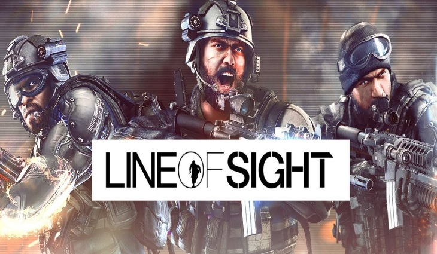

LINE OF SIGHT

SOBRE O JOGO
Line of Sight é o novo FPS da Level Up e faz sucesso devido a sua jogabilidade, vasto arsenal e seus diversos modos de jogo.
No shooter, os personagens dominam o controle de elementos como fogo, água e eletricidade. Além de partidas cooperativas e competitivas, Line of Sight oferece campanhas em que o jogador enfrenta o computador e precisa coordenar uma equipe de soldados. Também é possível customizar seus personagens e arsenal.
Produtora(s): Level UP
Editora(s): Level UP
Plataforma(s): Microsoft Windows
Data(s) de lançamento:17 fevereiro de 2016 (Data de inscrições para o Beta)
Género(s): First-person shooter
Modos de jogo: Multijogador